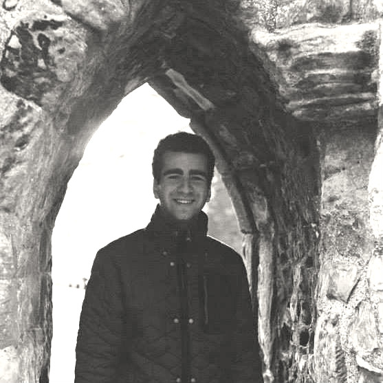

Meet our committee

Joel Salmon
Founder, President
Hashim Khan
Co-founder, Director
Mahima Khemka
Treasurer

Joana Westphal
Logistics Officer
Max Curtis
Speakers Committee
Ellie Campbell Green
Speakers Committee
Khadeeja Sameen Khalid
Secretary
Zain Hussain
Islamic Society Liaison
Henna Auerbach
Jewish Society Liaison
Copyright (C) 2015 St Andrews Coexistence Initiative. All rights reserved. This website is hosted by the University of St Andrews.